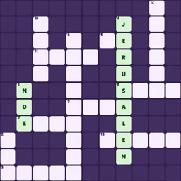

← Juegos y actividades
🧩 Crucigrama Bíblico
Las respuestas del crucigrama se escriben en español.

0 / 13
Pistas
1.
Patriarca del arca (3)
Validar
2.
Hombre justo que sufrió pruebas (3)
Validar
3.
Lugar del nacimiento de Jesús (5)
Validar
4.
Ciudad santa (9)
Validar
5.
Hebreos 11:1 (2)
Validar
6.
Monte sagrado (4)
Validar
7.
Hombre que caminó con Dios (4)
Validar
8.
Lo que Dios ofrece al mundo (9)
Validar
9.
Embarcación del diluvio (4)
Validar
10.
Dios es… (4)
Validar
11.
Acción de comunicarse con Dios (4)
Validar
12.
Lo que separa al hombre de Dios (6)
Validar
13.
Nombre del Salvador (5)
Validar